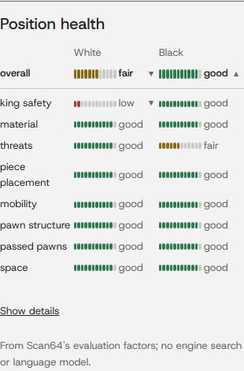
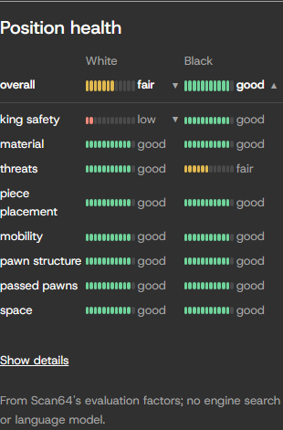

Using Scan64
Scan64 is a local-first chess practice and learning application. It records games you play or import, analyses them with Stockfish, turns diagnosed positions into owned lessons, and updates your profile from server-graded practice and supported tactical evidence. Lesson hint usage is app-reported; a recorded unhinted answer does not prove independent solving.
Contents
- Start the application
- Updates
- Choose a starting point and read your strength record
- Keyboard, touch and screen readers
- Play a game and use hints
- Import and analyse a PGN and review every move
- Practise a repertoire and save a coach packet
- Train from diagnosed positions and inspect patterns
- Daily goals and tracked pattern evidence
- Use coach mode, optional local wording and transfer measurement
- Import a puzzle catalog and practise puzzles
- Data and privacy and manual acceptance
Start the application
Follow the Get started for source, Docker or the desktop app. From v0.7.0 on, the desktop installers are attached to each release on GitHub Releases. Desktop CI artifacts are temporary test builds only, not release downloads; a successful pull-request run does not make its artifacts trusted. Scan64 0.6.1 and earlier shipped a different macOS app that opened a browser. It cannot update itself to the unified desktop app: delete it, install the current desktop release by hand, and optionally remove its data with rm -rf ~/Library/Application\ Support/Scan64.
Install on your OS
- macOS Apple silicon (arm64): open the
.dmg, drag Scan64 into Applications, eject the image and open Scan64 from Applications. The build is ad-hoc signed, not Developer ID signed or notarized. On first launch, allow it once with System Settings → Privacy & Security → Open Anyway; never disable Gatekeeper globally. - Windows x64: run the
-setup.exeinstaller and launch Scan64 from the Start menu. Installation is per-user and does not require administrator rights. The installer is unsigned; if SmartScreen blocks a download you verified, choose More info → Run anyway. Smart App Control offers no per-app exception. - Linux x64, AppImage: make the downloaded file executable with
chmod +x /path/to/Scan64.AppImage, then run/path/to/Scan64.AppImage, substituting the actual filename. AppImage needs FUSE support from your distribution. If that is unavailable, use the Debian package. - Linux x64, Debian/Ubuntu: install with
sudo apt install /path/to/scan64.deb, substituting the downloaded package's actual absolute path, then launch Scan64 from your application menu. Package installation needs administrator rights.
Before bypassing any warning, follow Open an unsigned installer safely: download from the releases page, check the SHA-256 digest, and use only the per-app steps it describes. Desktop installers bundle Python and three engines: a fresh install analyses with Caissa 2.0 and plays the bot levels with Arasan 26.1, and an install updated from before keeps Stockfish (which engines an install uses). Until #396's fit of Caissa's score scale lands, a fresh install's win percentages and mistake detection use a provisional scale: Caissa's centipawns are read as Stockfish's, and the two measurements so far disagree on how far apart they are (provisional score scale). No developer tools or separate engine installation are needed. The updater verifies separate signatures for the macOS .app.tar.gz, Windows -setup.exe and Linux .AppImage bundles. A .sig is not a platform code-signing certificate.
Desktop first run and data
The desktop app opens one window containing Scan64, not a browser tab. Closing it stops its server and engines; on macOS, Dock Quit or ⌘Q also quits. A second launch focuses the existing window. Games survive relaunch in scan64.db under the OS app-data directory:
- macOS:
~/Library/Application Support/org.scan64.desktop - Windows:
%APPDATA%\org.scan64.desktop - Linux:
${XDG_DATA_HOME:-~/.local/share}/org.scan64.desktop(normally~/.local/share/org.scan64.desktop)
Downloads and logs/server.log live under the same directory. Keep the app's local storage to retain your player token. The shell uses a fixed origin, so a different server port does not sign you out. Data from the older desktop app is not migrated.
Puzzles and Settings → Puzzle library offer Download puzzles and Choose a file…. Progress and Cancel stay available while navigating. Puzzle downloads always require a click.
The desktop window cannot shrink below 960 logical pixels wide. Navigation stays on the left, including when zooming; bottom navigation is reserved for narrow browser windows. The chevron button under the Scan64 logo toggles the sidebar: Expand sidebar reveals button labels and Collapse sidebar returns to icons; hovering shows which one it does. In compact windows, labels open over the content without shrinking the board; Escape, the backdrop, or a navigation selection closes the drawer. Wide windows remember your expanded/collapsed preference.
An empty puzzle library shows setup across the main content area instead of reserving space for a board. During practice, the board and current-puzzle controls share a bounded workspace; results and hints stay beside the board. Daily progress and solve streaks share a summary row, with detailed selection and rating explanations available through expandable sections. Import and update activity icons in the compact sidebar open the corresponding Settings panel.
Board appearance
Open Settings → Chessboard to choose Staunton (cburnett, the default), Merida, Chessnut, Spatial, Firi, California, Maestro, Staunty, mpchess or Sophia pieces, and a board. Flat colours: Brown and cream (the default), Green and buff, Classic brown, Classic green, Walnut, Sand, Slate, Sage or Graphite. Wood: Walnut and maple, Rosewood and boxwood, Mahogany and maple, or Ebony and boxwood. Stone: White and black marble, or Grey and blue granite. Piece and palette choices persist independently of Appearance → System / Light / Dark. California, Maestro and Staunty are licensed for non-commercial use only; Settings links to the separate artwork licences and attribution.
The traditional palettes follow FIDE's equipment standard for tournament boards. The current FIDE Handbook C.02 (from 1 March 2026) gives white, cream, ivory or buff light squares and brown or walnut-tone dark squares: Brown and cream and Classic brown. Earlier editions also named green dark squares with buff or off-white light squares (FIDE Arbiters' Manual 2020, "Chess boards"): Green and buff and Classic green. Brown and cream and Green and buff use darker squares than their classic versions for stronger contrast.
The wood and stone boards use photographed veneer and stone with a matte finish. They use colour maps only, with no gloss, specular highlight or glare. Every square takes its own crop and orientation of the source, so the grain and veining do not repeat. FIDE gives no numeric contrast for light and dark squares, so Scan64 measures the mean WCAG relative-luminance ratio of the light squares to the dark squares and requires at least the default Brown and cream palette (3.10:1). The ratio is measured on the encoded texture and checked again on the rendered board in Chromium.
| Board | Group | Light/dark luminance ratio | AVIF | WebP |
|---|---|---|---|---|
| Walnut and maple | Wood | 5.26:1 | 175 KB | 228 KB |
| Rosewood and boxwood | Wood | 7.80:1 | 306 KB | 437 KB |
| Mahogany and maple | Wood | 6.30:1 | 299 KB | 395 KB |
| Ebony and boxwood | Wood | 9.68:1 | 179 KB | 231 KB |
| White and black marble | Stone | 11.62:1 | 520 KB | 532 KB |
| Grey and blue granite | Stone | 6.32:1 | 471 KB | 660 KB |
Budget. Each board is one 2000 × 2000 px image, sharp at one texel per device pixel for a 1000 px board on a 2x screen. A board downloads at most 700 KB: AVIF where the browser supports type() in image-set() (Chromium, including WebView2 in the Windows desktop app, Firefox, and Safari 17 or later), otherwise WebP. Older Safari (14–16), and the macOS desktop app on a Mac whose newest Safari is 16 or older, gets the WebP texture. Decoded, the selected texture uses 16 MB of image memory (2000 × 2000 × 4 bytes); only the selected board loads. From navigation to the second frame after the texture decodes, the Analysis board must paint within 1.5 s. On 2026-11-26, the production web bundle that the desktop app ships (pnpm build, served by vite preview, Chromium through Playwright on Windows 11) painted each textured board in 435–509 ms over three runs, except Rosewood and boxwood at 460–943 ms. Until a texture has loaded, and in a browser offline before its first use, the board shows flat squares in the texture's mean colours. Rebuild the textures with uv run scripts/build-board-textures.py; the build fails if a board exceeds the budget or falls below the contrast minimum. Sources and licences (CC0) are listed in THIRD_PARTY_NOTICES.md.
Settings lists the piece sets in two groups: Staunton pattern and Other designs. FIDE Handbook C.02 (section 6.1, from 1 March 2026) requires Staunton-style tournament pieces, a light set and a dark set, and a matte finish that does not shine excessively. Its height and base proportions apply to physical pieces; flat board graphics do not reproduce them. Every set in the Staunton group draws the standard Staunton forms: a cross-topped king, a crowned queen, a mitred bishop, a horse-head knight, a crenellated rook and a ball-headed pawn. A saved piece set keeps working after an update; an unknown saved value falls back to Staunton (cburnett).
| Piece set | Staunton pattern | Licence |
|---|---|---|
| Staunton (cburnett), default | Yes | GPL-2.0-or-later |
| Merida | Yes | GPL-2.0-or-later |
| Chessnut | Yes | Apache-2.0 |
| California | Yes | CC BY-NC-SA 4.0 (non-commercial) |
| Maestro | Yes | CC BY-NC-SA 4.0 (non-commercial) |
| Staunty | Yes | CC BY-NC-SA 4.0 (non-commercial) |
| mpchess | Yes | GPL-3.0-or-later |
| Sophia (GNOME Chess) | Yes | W3C Software Notice and License |
| Spatial | No | MIT |
| Firi | No | CC BY 4.0 |
Board controls
- Premove (Play only): while the bot thinks, drag your next move. It is queued locally, then checked against the bot's reply and submitted only if legal. An illegal premove is discarded. Use Cancel premove, Escape inside the board controls, or right-click the board to cancel. Promotion choices appear when the premove becomes legal. Premoves are disabled during coach interruptions, hint previews, offline play or queued-move synchronization, and in puzzles and lessons.
- Your annotations: right-drag on any board for a purple arrow; right-click a square for a purple circle. Click the board to clear your drawings. These unnumbered marks stay on your device and are separate from numbered coach/hint arrows; clearing them does not remove server annotations.
- Flip board: Play, Review, Analysis and Puzzles each have a Flip board button. It reverses the pieces and coordinates for that board without changing the position, your playing colour or legal moves. Read board position reports the same position and viewing side.
- Move sounds: Settings → Chessboard → Move sounds is on by default. Moves, captures, checks and game endings use locally synthesised sounds, with no audio files or downloads. Sound starts after a keyboard or pointer interaction. Turn it off to silence the app; the setting survives restarts.
Reset learning progress
Open Settings → Reset learning progress to start fresh without deleting your account, saved games and analyses, imported libraries or settings. Reset clears puzzle and lesson results, learning ratings and strength estimates, streaks, mastery, achievements and review schedules, including active learning sessions. Configured goals are kept. The confirmation screen lists the boundary and requires the exact phrase RESET PROGRESS before Permanently reset learning progress becomes available.
Reset cannot be undone. After success, choose Continue and reload to load fresh state; reload other open Scan64 tabs too.
Historical games remain reviewable. Reanalysing or finishing a game created before the reset does not restore its old strength, mastery or review schedules. New learning attempts can still use preserved content.
Updates
Updates work in the desktop app from 0.7.0 on. Browser and container installs do not update themselves.
Open Settings → Updates for the installed version, last check time, Check for updates, and release notes. Check for Updates… is also in the Scan64 application menu on macOS and the Help menu on Windows/Linux. The app checks ten seconds after launch and every 24 hours while it stays open.
Download updates automatically is on by default and persists across launches. A signed update downloads in the background; the sidebar shows its version and percentage, then Restart to update. Turn the switch off to see Version X is available and download only when you press Download. Neither setting installs or restarts the app by itself: you must explicitly press Restart to update, which stops the local server before installation and relaunch.
Update progress is pushed directly from the native updater to the panel and sidebar; changing screens does not stop an update or create another progress poll.
If checking, downloading or installation fails, the Updates panel explains the failure and offers Retry. Linux .deb installs cannot self-update; use the release download link to install the newer package. A read-only installation or macOS App Translocation also shows an explanation and a download link. On macOS, move the app to a writable Applications folder and launch it there.
The app contacts GitHub Releases (github.com/Mathews-Tom/Scan64, with GitHub's release-asset download hosts) to check for and download updates. These requests disclose normal network metadata such as your IP address; they do not upload your games or database. Updates must pass signature verification against the app's compiled-in public key.
Before a newer desktop version can run database migrations, the server creates a consistent SQLite copy in the data directory's backups/ folder, retaining the newest three. First launch records the version without a backup. If a required backup fails, startup stops rather than migrating unprotected data. There is no automatic application-bundle rollback: reinstall an earlier trusted release if a new app cannot start, and keep the database backups safe.
Browser and source operation
The development-only scripts/run.sh instead uses the API on port 8001 and Vite on 5173.
The one-port source command is uv run scan64-cli serve after building the web client. It serves the UI, API and API reference at http://127.0.0.1:8001; use --port PORT to choose another port and --no-browser to suppress browser launch. Docker serves the same application on container port 8001 and keeps its database in /data/scan64.db; retain the /data volume. Source operation defaults to database.db in the working directory unless SCAN64_DATABASE_URL is set. Browser identity is tied to the exact browser origin, so changing hostname or port does not carry the stored token across.
On your first visit, enter a display name and select Start learning. Scan64 creates a player identity once; its bearer token stays in that browser's local storage. Use a separate browser profile for a separate player. Returning visits keep the stored identity.
Today offers Play, Train and Review actions, your latest game, the week's activity, weakest skills by name, and recurring patterns. The navigation groups game history and Import games under Review, daily lessons under Train, and Opening Explorer and Famous Games under Library, which also links to Import games. Profile shows named skills and evidence; Coach opens the existing linked-student dashboard. The shell follows your system's light or dark colour scheme.
Screen code loads when you first visit that screen. A loading status keeps navigation available, and a failed screen download offers Reload screen. Browser installs cache visited screen code for offline reuse rather than downloading every screen at startup; an uncached screen needs a connection. Cached code does not make live server operations available offline.
Choose a starting point
New registrations see Your starting point in Today and Profile. Existing players
are not automatically enrolled: choose Set up my starting point to opt in.
Declare Beginner, Developing, Club, Advanced or Not sure, then select Save level
and show suggestion. The server immediately suggests bot level 2, 3, 5, 6 or 1
respectively (declared-level-v1); puzzles are not required to obtain it. These are
overridable starting choices, not measured strength, placement results or human Elo.
Skip introduction and Continue later keep your identity and any recorded progress. Returning or reloading uses the same stored browser identity and server record; no second registration is needed. A later declaration does not reset the introduction's original start time or erase a manual bot choice.
After declaring, Start/resume daily puzzles opens the existing Puzzles screen: resume the active run or use its Daily Start action. The introduction counts the first five daily-slot-bound runs started after the server's introduction start time, not a separate placement set. A run already active before opting in does not count; a previously reserved daily slot can count if its run starts after opting in. Each qualifying run closes once, whether solved (with or without hints), failed or abandoned. The displayed count comes from server evidence, carries into later days, and does not estimate playing strength. A short or empty daily catalog never blocks Play now; practise another day rather than rerolling or manufacturing slots.
Play preselects your saved last manual bot choice, otherwise your declared-level suggestion, otherwise level 1. Only explicitly changing Bot level saves a manual choice. Suggestions never overwrite it and results never adjust the level automatically. Analysis Board and Famous Games keep their level-1 defaults.
Read your strength record
Profile separates your declared experience, starting bot suggestion, puzzle Elo event history and Stockfish results. Coach shows the same separate values for explicitly linked students, including provisional puzzle status; it does not show the internal profile rating as a measured player rating.
The puzzle scale starts at 1200, uses K=32, and is provisional until 20 rated puzzles. Events show before/after values and the recorded score. This is not chess/FIDE/site Elo, a bot-level conversion, theme mastery or a demonstrated improvement outcome. New skill states still use the provisional (3, 2) seed: it is a prior, not observed ability. Measured skill evidence is preserved, as is the internal 1500 profile rating; onboarding changes none of those values.
Bot result samples are separated by Stockfish level, server-stamped policy version and exact time control, not mixed into puzzle Elo. Untimed results retain their own history; 5+0 and 3+2 never share a cohort. Each cohort shows eligible wins/draws/losses, latest-five and previous-five samples and their trend; fewer than five games in either window means insufficient data. Ordering uses game creation time and id, not analysis completion. Legacy tracked results use the separately disclosed v1(unstamped) policy; Maia is excluded. Seed, colour and arbitrary client config keys do not define new cohorts.
Only owned, tracked, completed games with terminal results, a standard start, no coach mode and no recorded in-app hints qualify. Imports, unknown assistance, unfinished/unknown results and custom starts do not; resignations do. Analysis credit status is not required. These filters do not certify absence of takebacks or external help, and the windows describe results against that bot policy—not human playing strength or causal improvement. Archives preserve onboarding and existing history without replaying ratings; old archives without onboarding remain unplaced and opt-in.
Keyboard, touch and screen readers
- Use Skip to content to reach the main study area. Tab/Shift+Tab move between native controls; Enter/Space activate buttons. Navigation and browser Back/Forward move focus to the new study area and update the page title. Focus outlines follow the system light/dark theme.
- Boards have a readable position alternative listing square coordinates, piece colour/type, side to move, check/result and legal choices. It reflects the same position as the graphic, including selected review and preview positions; it does not disclose unrevealed hints, puzzle solutions or engine recommendations.
- Use the board's labelled move field for strict UCI (
e2e4,e1g1,e7e8n) or canonical English SAN (e4,Nf3,O-O). UCI is trimmed and lowercased; SAN is trimmed but case-sensitive and must match the generated legal notation, including disambiguation, capture, check or mate suffixes. AmbiguousNd2is rejected whenNbd2is required. Non-English SAN piece letters are not supported. - Submit a legal move with Enter or the submit button. Illegal/ambiguous input announces an error without spending a server attempt. Promotion without a UCI piece suffix opens explicit queen/rook/bishop/knight choices; cancel without playing, then correct the entry. Input stays unavailable during opponent turns, pending requests, promotion and read-only replay/line previews. Pointer drag and source/destination taps remain available.
- Hints announce their revealed step. Candidate previews are study-only: return to the game position before moving. Close hints or Escape inside the hint panel clears the preview and restores the Hint control. Lesson hints and server feedback are announced separately from graphical annotations; arrows/highlights have coordinate-based text equivalents.
- In Review, use move buttons, replay controls or keyboard graph points (Enter/Space; Left/Right changes ply). The move list is the full-size touch/keyboard equivalent of the graph's small points; labelled bands and key moments do not rely on colour. Retry this moment opens a named region; Close retry, Finish Review, or Escape inside it returns focus to the opener (or review heading if attempts exhausted). Imported lesson review similarly returns to its Review button. Famous Game study keeps its board read-only; use its separate prediction field for UCI/SAN.
- These controls cover Play, Review/owned analysis, free Analysis, Daily Training, Puzzles, Opening Explorer and Famous Games. Today, Library, Import, Profile, Coach and onboarding use the same navigation, labels, focus and responsive shell. At narrow widths/zoom controls and text reflow rather than requiring horizontal scrolling in the document or main area; the two-dimensional board fits its container. Reduced-motion preference disables decorative animation/transitions.
Acceptance limits: WCAG 2.2 AA is the target across shipped routes, not a certification. The human macOS Safari/VoiceOver position, move, promotion, hint, review and puzzle pass is pending owner observation. Keyboard/role-name and emulated touch/reflow checks do not substitute for that pass or establish support for every screen reader, real iPhone or browser. Record actual OS/Safari/VoiceOver versions and results before treating assistive-technology acceptance as complete; no unavailable AT results are claimed.
Play a game
- Open Play.
- Leave Display name (optional) empty or enter a name; your stored identity is used, so no registration or ID is needed.
- Keep the preselected Bot level, or explicitly change it to save your manual preference, and choose Play as (White, Black or Random). As Black, the opponent makes the opening move before you play.
- Select Coach Mode only for opt-in, post-move interruptions; start the game and use the labelled move field, source/destination taps or drag-and-drop. The SAN move list includes both sides' moves.
- If a pawn reaches the last rank, choose queen, rook, bishop or knight; that exact promotion is played. Play, Daily Training and critical-moment lessons share this board.
- Reload or return to Play to resume with your chosen colour and orientation from the server's latest state, including after browser Back or Forward. Untimed offline moves stay queued until the connection returns; timed moves require a live server response and are never queued. Moving, resigning and taking back stay disabled until the canonical game is loaded; if that refresh fails, use Retry game refresh before continuing. Take back undoes your last move and the bot's reply; it is unavailable in timed games, coach mode, after completion, while offline moves are queued, or before you have played a move pair. The bot's opening move is never removed.
- Select Resign, or finish by checkmate, draw or timed flag-fall. The server decides the result. Once a game has moves, Review game links to its analysis, which Scan64 queues automatically on completion. Resigning before the first move in an untimed game creates no empty game and has no review link.
A tracked-pattern link can open a different unfinished game without replacing the
browser's previously stored game. Return to Play without a session query to
resume that stored game. Ended or missing session links are consumed automatically
and fall back to the stored game when one exists.
Play offers eight server-defined levels from GET /v1/bots; Analysis Board's play-from-here and Famous Games' continue action default to level 1. The API takes opponent_config: {"bot_level": "1"} for Stockfish and optional player_color (white, black or random). Omitted colour uses the position's side to move. All eight levels use the same session-seeded MultiPV candidate policy with decreasing error budgets. They are calibrated relative to each other, not Elo-anchored, and show no Elo figure. This describes the Stockfish ladder; a fresh desktop or Docker install plays the levels with Arasan at a fixed UCI_Elo per level (engines). Stockfish's native reduced-strength move generator has no seed control, so it is not used for these levels. Maia's rating-based strength is unchanged. Stored older Stockfish sessions still resume using their original native skill setting.
A live opponent move and a background analysis use separate Stockfish pools. Analysis beyond the per-player daily admission quota remains queued; it is not silently discarded.
Run uv run scan64-cli bots calibrate to play 20 fixed-seed, node-limited games per adjacent level pair, with each opening from both colours. Live play and calibration share the default budget of 1,000 nodes per move. The command independently repeats every game and compares the full move records, then prints the Stockfish version and each higher level's score against the level below; it fails if a repeat differs or any score is below 60%. Repeat the command with the same Stockfish version for identical results. Calibration is a relative engine test, not a human-rating estimate.
Timed play
Choose Untimed (the default), 1+0, 3+2, 5+0 or 10+5 before starting. The first number is each side's initial minutes; the second is the seconds added after that side makes a legal move. Both White and Black clocks are visible, and only the active side runs. Bot turns consume actual thinking time with a bounded visible delay; the bot's existing playing policy is unchanged.
The server owns balances, increments and flag-fall. A clock reaching zero on screen does not declare the result: the app refreshes the authoritative state. The opponent wins on a flag unless it lacks mating material, in which case the result is a draw. Flag draws use an insufficient-material check, not general position-aware dead-position detection. Reloading, navigating, closing the browser or restarting the server does not reset or pause a deadline. Hints, Candidates, blunder-guard checks and coach interruptions do not pause clocks. A failed connection can leave an already accepted human move awaiting the bot; refresh/resume uses the retained position and clock instead of replaying the move. Timed takebacks are unavailable.
At zero, the single deadline refresh waits for the server's clock transaction to commit; it does not poll for clock status. If that wait exceeds 15 seconds, the board shows a refresh error and offers a retry. Time continues to run while waiting.
Supported archives preserve and validate clock state; importing an active game retains its original deadline, so time spent outside the app still counts. Timed exports declare their timed session IDs alongside the clock rows; an incomplete declared clock set is rejected, while historical static clock settings remain untimed. Resetting learning progress preserves the game's clock without restarting it; deleting the player removes the clock. Before downgrading a database with retained timed games, use the reviewed pre-migration backup: the downgrade refuses to discard clock state. The desktop backup policy above still applies; source/CLI operators must retain their own pre-migration copy.
API compatibility: new clock_config requests use numeric integer initial_seconds (1–86,400) and increment_seconds (0–60), not string values or the old static time_remaining_ms key. Timed move and opponent-resume commands carry expected_clock_version matching the returned clock.version; protected moves also retain their assistance-generation check. Move and opponent-resume commands return their own committed move/status/clock transition; retrieve the full current session with GET /v1/play-sessions/{id}. Optional after_clock_version waits once, up to five seconds, for an active timed clock version to change; it returns the authoritative snapshot without driving the opponent or changing clock state. Historical archives without an authoritative clock row remain untimed.
Candidates and blunder guard
Select one to three legal moves in Candidates, then Grade candidates. The board does not move while Scan64 evaluates your proposals. Choose a graded move explicitly to play it.
Blunder guard is unchecked until you enable it. It checks each proposed move before playing it; a blunder warning requires Play anyway or Cancel. Other scored verdicts play your original proposal, never an engine replacement. Busy or failed checks do not play a move.
Both features require a connection. Their protected moves never enter the offline queue. A changed position or expired verdict requires a fresh check. Candidates and guard verdicts count as full engine assistance before results appear, including after cancellation, reload or takeback; the session shows the recorded assistance modes. Assisted positions earn no good-move credit, and assisted games do not count toward bot strength. This records in-app assistance, not whether external help was used.
Your accepted move is saved before Scan64 waits for its bot reply. Do not replay an accepted human move or reuse an expired grade.
- Untimed games: if the bot fails or a protected completion becomes uncertain, use Retry game refresh to load the saved position, then Resume bot turn if the bot still has to move. Reloading an active game also restores this recovery control.
- Timed games: Scan64 automatically refreshes the saved position and attempts the pending opponent turn. If that attempt fails while the opponent still has to move, choose Retry opponent move. If another opponent command is already running, Scan64 waits once, up to five seconds, for its clock version to change; if it is still pending, use Retry game refresh. Failed game refreshes also offer Retry game refresh. These controls recover the saved turn and clock without replaying your human move; clocks keep running.
Queued moves are matched against the saved starting position and full move history before synchronization. A human move already saved is not sent again. Entries with an unknown or mismatched source position are retained and keep only their own session paused; other sessions can synchronize.
For older queued moves without a recorded source position, choose Discard legacy queued moves… and review the warning. Keep queued moves cancels without deleting anything. Discard and refresh permanently removes only the confirmed older local moves from that game; saved games, other games' queued moves and entries with a recorded source are kept. Play remains locked until the saved game has refreshed successfully.
Hints during play
Select Hint beside the game board for a three-step ladder: first a highlighted square and a question; press again for the idea and the piece to consider; press a third time for up to three numbered sound moves and their arrows. Candidates label engine-line-backed reasons Tactical and local move facts Principle; engine preference means neither applies. Principles describe development, castling, centre occupation or added control, rook files, king escape squares against back-rank mate, or passed-pawn advances. They describe what a move does, not why it is best or a promise of winning. Only moves inside the engine tolerance receive reasons. The first two responses do not disclose moves or their destination squares.
Use Preview candidate, Next step, Previous step, or Full line to explore without submitting any moves. Select Return to game position before continuing play, or Close hints to clear the arrows. New game moves invalidate old hints. Hints require a connection and are unavailable while a move is pending, offline moves await synchronization, or a coach interruption is open.
Live hints are recorded on the server before they are revealed. Any hint step excludes good-move credit for that canonical position, including after reload, takeback or revisiting it with different move counters. Closing the panel does not erase assistance. If the position changes while a hint is being prepared, request a new hint; the stale hint is not disclosed. Standalone FEN study hints remain available without claiming live-game assistance history.
Run uv run python -m scan64.learning.evaluation.hint_coverage to report tactical, principle-only and fallback shares of candidate moves over M48's 40 recorded real games, without launching an engine. Each reached position uses its deepest available recording (deep source, focused reply, or fast search); at most three tolerance-qualified candidates count per position. Tactical takes precedence when a candidate also has a principle. These shares measure explanatory coverage, not correctness or learning outcomes, and have no pass threshold.
Import and analyse a PGN
- Open Review → Import games (or Library → Import games).
- Paste a game, choose Your side (White or Black), and import it as the active player. A matching PGN player id or display name pre-selects your side. Lessons and profile observations use only your moves; older games without a stored side cannot be analysed.
- Open Review, select the imported game, then select Analyse game when it has not already been analysed.
- The import screen starts the analysis itself and shows its progress, then the learning opportunities it found. In Review, a game still being analysed says so; select Refresh review to see the result.
- Replay every move on the analysis board, including unflagged moves and the final position. Select a move, a graph point or a key-moment marker to keep the board and move list linked. Analysis keeps at most five lessons at distinct source positions, ranked by win-probability loss and diagnostic confidence, with a penalty for skills already represented by kept lessons. A deeper source search can discard a flagged move when the move actually played is sound; lower-ranked mistakes then fill the available slots without a skill penalty for discarded candidates. Only kept lessons have review schedules; evidence and profile observations still include all diagnosed owner opportunities.
PGN analysis progress arrives through a live authenticated stream, not repeated status requests. Leaving Import stops its listener without cancelling the server's saved analysis job; use Review to return to the saved game. Too many concurrent progress streams or a disconnected stream reports an error rather than silently polling. Deleting the player closes their open analysis streams.
For a deterministic manual diagnosis walkthrough, import this game:
[Event "Manual diagnostic test"]
[White "Manual Tester"]
[Black "Opponent"]
[Result "0-1"]
1. e4 e5 2. Qh5 Nc6 3. Qxe5+ Nxe5 0-1
The analysis identifies the hanging queen as board_awareness.hanging_piece. Lesson answers depend on the engine analysis, not a hard-coded move.
Good move credit
Review lists credited moves with a plain-language proof and a button selecting their ply on the board. Each owner move also shows credit or its exclusion reason. Profile → Strengths and weaknesses reflects the credited skill after analysis; reopen Profile to load its latest state.
Credit is deliberately conservative: only a newly tracked, completed game's scored sound owner move that exactly matches the stored first engine line can qualify. Supported tactics are profitable captures (not while in check, not mere recaptures restoring material, with a known preceding move) and checks whose legal line proves material gain or a positive mate score. Capture takes precedence when both apply. Each player/game/canonical source/skill earns at most one +1 success update; repeated positions cannot farm credit. A player earns at most two credits per skill per game. When more qualify, proven mate comes first; otherwise higher proven net capture gain or checking-line material gain comes first, then the earliest ply. Other qualifying moves show “per-game credit cap reached”. Archives exceeding two credits for one player/game/skill are rejected rather than silently trimmed. Same-source lessons, attempts and failed observations exclude positive credit rather than changing existing failure or practice semantics.
“No in-app hint” means only that Scan64 recorded no hint at that source; external assistance cannot be established. Imported games, old archives and unknown assistance history do not establish eligibility. Coach mode, custom-FEN starts (“started from a studied position”), hinted sources and analysis performed before the game ended receive no positive credit. Review reads and review-only backfill never award it later. Other lesson practice and hinted half-credit are unchanged.
Not every good move earns credit. Unsupported, untrusted, retired or incomplete proofs earn none. Low-budget engine lines are coarse evidence, not measured improvement, a playing-strength rating or an independently validated positive-tactic precision claim.
Back up before upgrading or rolling back
Before a database migration, save both a player export archive using the player data export API and a database-file copy. Stop Scan64 before copying SQLite so the backup is consistent; keep the copy outside the live data directory. The player archive preserves owned progress and credit/hint provenance, while the database copy also preserves shared data. Keep the matching application version and verify the recovery path on a disposable copy before touching your working database.
For the positive-move credit migration, the copy-tested downgrade keeps already awarded skill alpha. Export the positive-credit ledger before downgrading; do not guess a subtraction from decayed skill values. Returning to a pre-upgrade database instead means that copy has none of the later progress, including unrelated games and practice. Older player archives restore assistance history as unknown, not independently played.
For the 0.12.0 changes, a schema downgrade refuses to discard saved repertoire data or active local wording consent. Roll back with a copy of the matching pre-upgrade database and application rather than deleting live data to force a downgrade. Keep the newer database and player export separately to preserve later progress. Account exports do not carry local wording consent.
Measure diagnosis precision offline
Run uv run python -m scan64.learning.evaluation.real_games from the repository root. It prints precision, prediction support (TP + FP), true/false positives and missed reference labels for every skill code, without launching Stockfish. --check, also run by scripts/check.sh, rejects regressions of the frozen trusted-code allowlist: precision must be at least 0.80 with support of at least 10.
Game analysis and coach interruptions now show exactly one measured primary cause, with no secondary codes. Only the frozen trusted codes generate these lessons, explanations and diagnosis-derived profile updates. Untrusted detections remain stored evidence; existing skill rows are not deleted. Legacy game lessons without the current M48 fast-proof marker are hidden even when their code is trusted. Patterns, weekly summaries and opening error rates use the same visibility policy. Hidden rows remain stored but reserve neither lesson slots nor source positions. A hanging-piece lesson must replay a legal fast reply that wins its named piece in the target-local exchange, with whole-line profit only a secondary check. Calculation signals remain explicitly unvalidated hypotheses, not claims about where a human stopped thinking. Curated Opening Explorer, transfer positions and famous games use author-assigned teaching codes, not detector diagnoses, so their content is unchanged.
The committed tests/fixtures/m48/real_games.pgn contains the first 40 qualifying games from the January 2013 Lichess CC0 archive: both ratings 600–1600 and at least 20 plies. recorded.json records the source URL, published source checksum, selection rule, engine identity and fixed node limits. Reference labels use only the first principal variation from separate 1,000,000-node, MultiPV-4 source and reply searches. The hardened detectors use 10,000-node signals instead. The oracle module does not import evidence composition or detector predicates. For a capture, only consecutive captures on its target square establish the named piece's exchange-local gain; profit elsewhere later in the line cannot justify calling an evenly traded piece hanging. Whole-line material gain is only a secondary check. Each detector is arbitrated separately for measurement, so competitors cannot conceal false positives. This remains an engine-derived operational reference, not independent coach review or proof of rating gains. Calculation is operationalised as material lost only later in a line; development as an engine move developing a home minor while at least three remain home in the first ten moves. These labels do not reveal where a person stopped thinking or prove that an opening choice caused a loss.
To reproduce recordings, download the compressed source named in provenance and run uv run python scripts/record_diagnosis_reference.py SOURCE.pgn.zst with Stockfish and zstd on PATH. The recorder verifies the published archive SHA256 before streaming decompression. --augment-before preserves existing output and records only missing deep source positions.
M78 adds a separate, preregistered fresh sample: the next 80 qualifying games in source order, not a selection of mate examples. The original 40 games are development evidence for this change, not its new trust test. Allowed checkmate (threat_processing.allowed_mate) requires a legal engine mating line in at most three moves after the mistake and a 1,000,000-node source search that does not find an already forced mate against the mover. This source-depth confirmation is the exception to the older fast-only detector policy above. The trust threshold remains precision ≥0.80 and support ≥10; the fresh sample alone decides promotion, and insufficient support does not trigger more games in this PR. See the implementation and limits and the measurement report.
M79 re-tests Missed capture on a third, separate corpus: qualifying ordinals
121–200 from that same archive, with unchanged filters and engine budgets.
The earlier 120 games are development data for this code. Only the new 80 decide
whether it remains trusted, using precision ≥0.80 and support ≥10; other codes
retain their earlier gates. Neither detector evidence nor the new reference may
call a capture "missed" when its proposed move is the move actually played.
The source-depth/reference-label limitations and committed preregistration are
documented in real-game diagnosis.
--m79-fresh80 records this separate corpus and refuses to overwrite it.
Historical habit credits and pattern awards restore using the bounded history of
trust at award, not today's allowlist. Current pattern/training eligibility still
uses current trust; withdrawal does not delete or rewrite earned evidence.
The preregistered M79 result is 78 TP / 15 FP, precision 0.839, support 93
(29 missed reference labels), so Missed capture remains trusted. Its puzzle
practice mapping, pattern and habit eligibility remain active; no other code's
trust decision changes. This is engine-derived agreement, not coach validation.
Train from diagnosed positions
Open Train after one or more owned games have generated eligible lessons. Find a move keeps the standard Daily Training board interaction.
- A lesson is served only with durable player-owned opportunity and study-session context.
- Move answers are checked on the server against all sound moves found by the lesson's source-position MultiPV search (up to eight lines). A move is sound when its win-probability loss against the best is at most 0.08, using the Lichess centipawn logistic curve and decisive probabilities for mates. A sound alternative to the first engine choice shows Correct and records a success.
- An Allowed checkmate lesson additionally rejects any engine-scored forced-mate loss, even if its probability is within 0.08 of the best. The objective is to find a sound move that prevents mate, not merely delay an already lost mate.
- A verified attempt advances only its matching review schedule and active skill state.
- Lessons have three attempts. A first wrong answer draws the nudge and a second draws the idea. Next hint reveals the next step at any time without spending an attempt, so you can see the moves before your final try. Hint usage is recorded with each answer; a hinted success keeps half credit. A third wrong answer ends the lesson with its explanation and drawings. Critical-moment review uses the same ladder, including for older lessons upgraded on read from their existing source-position analysis (at most one bounded engine fallback per read).
- Opening Explorer missions are recorded separately and do not change this profile path.
- An empty training screen means Scan64 has no eligible owned lesson for the active player.
Select Safe or blunder to choose between the move you actually played and a distinct engine-verified sound move from the same diagnosed position. Answer with one of the two move buttons; the board is read-only. Feedback, hints, skill updates and the review schedule use the existing lesson-attempt path and its shared lifetime three-attempt limit, including attempts used in another training mode. Only positions whose saved analysis proves the played move loses more than the sound-move tolerance are eligible; missing scores or an incomplete sound-set bound cannot establish a blunder. Already-exhausted, retired, unsupported or ambiguous positions are not offered; no eligible positions shows an explanatory empty state. Creating a drill reads saved evidence without starting an engine search.
Open Profile to inspect active mastery, evidence, and recurring diagnoses after completing an attempt.
FSRS review scheduling
Eligible lesson, daily-puzzle and conversion-sparring reviews use FSRS 6.3.3 with timing fuzz disabled. A verified failure is Again; a successful answer with recorded hints is Hard. An unassisted success is Easy only when hints are recorded as zero and solve time is recorded within 30 seconds for lessons/transfer tests or 60 seconds for puzzles; other successes are Good. Missing historical hints or time remain unknown, not zero, and cannot earn Easy. Lesson and transfer hints/time are app-reported; puzzle hints/time are server-recorded. Results remain server-verified. Fixed transfer-test timing, award rules and review-mode eligibility do not change.
Upgrading an existing database or restoring a pre-0.11 player archive preserves every schedule's exact due date, last-review time and retirement state without inventing past grades. Current archives retain FSRS state and review observations; progress reset and account deletion clear them only for the selected player. A schema downgrade is refused after FSRS reviews have been recorded to prevent data loss; retain the pre-migration database backup and exported player data for recovery.
The pattern with its evidence
Today and Profile show the same ranked recurring diagnoses as the weekly summary. A pattern needs retained trusted lessons in at least three distinct owned games with completed analysis and a known playing colour; an unfinished (*) result still counts for presence. Opponent moves, invalid lessons, retired lesson schedules and retired skills do not count. Reads do not run an engine or update learning records; later invalidation or retirement removes supporting evidence on the next read.
“Highest observed loss among scored retained moments” means the sum of stored A8 win-probability losses, not all mistakes in your games or a causal explanation of your play. Scored patterns rank before unscored patterns; ties use distinct-game support then diagnosis code. Coverage shows scored occurrences out of all supporting retained occurrences separately from game support. Missing scores are unavailable, never zero. The A3 retention cap (at most five lessons per game) biases this sample: these are descriptive recurring diagnoses, not statistically validated habits, population comparisons, or psychological causes.
Each supporting link opens your owned Review at that move. The pattern supplies its diagnosis template; only Review's existing top-three key moments supply a detailed explanation or retry there. Other supporting moves remain inspectable without expanding that limit. Linked coaches can see the pattern, observed cost and coverage, but receive no student Review or practice actions.
Pattern practice tries available same-code Your mistakes retries, then a mapped Theme puzzle run as unrated related practice, not diagnosis or mastery evidence. When related supply is unavailable or exhausted, the plain Daily link says may be unrelated. It does not select or reorder today's slots, regenerate the set, or extend retry budgets. Failure observations, practice results and capped positive game-move credit remain distinct.
Progress: before/after pattern recurrence
On Profile, the Progress: before/after patterns section compares saved online games around your first completed, server-verified lesson or mapped puzzle attempt for each currently trusted pattern. Incorrect completed attempts count as training; starts, abandoned puzzles and client-reported success do not. Resetting learning removes earlier training anchors, not saved games. New training can compare those saved games again. This report does not change habit awards, ratings or mastery.
Games need a validated, game-specific Lichess or Chess.com Site/Link, a matching stored PGN mainline and precise UTCDate + UTCTime headers. Date-only or local times are excluded, never replaced with import time. An old game imported after training still belongs before it. In-app play sessions and duplicate online game identities are excluded. Periods use the PGN start time; a game starting exactly at training is excluded as an ambiguous boundary.
Each side needs three finished, fully analysed games, each with at least 20 of your moves. The report joins uncapped saved candidate evidence to the actual move reviews, source/reached positions and saved analyses, and counts one trusted primary diagnosis per game/ply/code. Opponent moves and the five-retained- lesson cap do not enter these counts. Candidates use the existing >150cp fast-pass threshold; absence outside that threshold is not measured. Unsupported, missing or incompletely joined candidate evidence excludes that game for that pattern, not a zero-occurrence denominator. A fully scored game with no threshold candidates can contribute zero occurrences.
Qualifying comparisons show occurrences per 100 owner moves, raw occurrence, game and move counts, and 95% Wilson intervals on the same scale. Wilson assumes independent moves, while moves within games are correlated. This is descriptive association, not evidence that training caused a change, permanent mastery or improved chess strength. Mapped puzzle themes are related recognition practice. Otherwise the section says Not enough games, gives available counts and exclusion coverage, and leaves rates unavailable rather than zero. Its retry button reloads only this section; other Profile panels remain usable.
Download coach packet explicitly saves one local scan64-coach-packet.zip for
a human coach. In the desktop app, choose a new .zip filename in the save dialog;
existing files are not overwritten. The packet contains only summary.md and
evidence.pgn, not a personal archive. The summary preserves this report's
coverage, denominators, raw counts, insufficient-sample status, Wilson intervals
and descriptive caveat. The PGN
contains the exact trusted primary occurrences included in each pattern's
before/after samples, including sparse samples; excluded games and patterns
without a verified training anchor add no positions. A zero-occurrence sample
needs no PGN entry. No analysis or remote upload is started.
Open the PGN with a chess viewer supporting FEN / SetUp positions. Each entry starts at its full source position and shows only the recorded owner move, annotated with the trusted pattern, not generated advice. The summary's E references locate PGN entries; G references identify games within this packet, with source ply indices to distinguish positions. Original names, online links, game metadata and credentials are omitted. Sharing the ZIP deliberately exposes those chess positions, training times and pattern statistics. Save it only where you intend to share it. A failed download can be retried without leaving Profile.
Daily goals and tracked pattern evidence
Today and Profile show a daily qualifying-solve goal, default three, on the server's UTC calendar. Qualifying solves per day accepts a positive whole number; Save next-day goal schedules every edit for the next UTC day. Today's goal and past day goals do not change. Supply shows unplayed daily slots, eligible lesson retries and whether extra puzzle modes are available. This is not a promise that every retry will qualify: a prior attempt or repeated source can exclude it. Short or exhausted supply never silently lowers the goal, grants a solve or buys a streak. The panel refreshes at the server's UTC reset and when returning to a visible tab. Use Refresh habit record after practice to fetch current server evidence.
A puzzle counts only after a terminal, server-unhinted success with its matching
persisted attempt. A legal alternative checkmate on the final solution move counts
too; earlier solution moves must still match. A lesson counts only when it is your
visible, trusted,
non-retired persisted_opportunity, the server grades the opportunity's first
recorded attempt as successful, and that attempt reports zero hints. An earlier
wrong or hinted attempt disqualifies a later retry for this goal, even if the retry
is correct. Lesson hint usage is app-reported; lesson answers and hint data are
available to the app. This is not server-proven independent lesson solving and
cannot establish absence of external assistance. Existing hinted skill-credit
rules are unchanged.
The same puzzle or canonical source position (EPD, without move counters) counts at most once across modes in a UTC day. Replaying an already credited result does not create another credit. Wrong answers, starts, time spent, hint requests, foreign or exhausted sources, ungraded attempts, transfer practice and opening attempts do not qualify. A puzzle reserved yesterday but finished today counts on the server completion day's UTC date, not the slot date, browser date or PGN date. This habit record grants no mastery, puzzle-rating or other rating bonus.
The calendar-day streak is separate from Puzzles' consecutive solve streak. Today stays in progress until the displayed UTC reset boundary, including after reaching its goal. A missed day breaks the calendar streak only after that day ends. Stored day goals, qualifying source keys and point-in-time trust-at-award snapshots make historical met days immutable. Later source withdrawal or retirement is annotated in the day history, but does not un-meet a day or break its historical streak. Ownership deletion is the exception: it removes that player's snapshots. Later review backfills do not rewrite a snapshot's original grading loss or create new historical credit.
Habit evidence uses versioned policy habit-v1 with a persisted effective timestamp (cutover). Results before cutover receive no retroactive credit. Player archives preserve policy/version/cutover, scheduled goals, daily source/trust snapshots, targets, practice/window references, invalidity reasons and awards. Each award keeps exactly five ordered game/analysis-job references with their server timestamps, plus any separate analysis barrier that released the award. Restore validates that saved evidence against the archive; it does not reconstruct a new window from today's game ordering. Lesson and pattern evidence may describe the position reached after the played move; restore checks its exact connection to the owned source move and stored analyses without rewriting the evidence or replaying rewards. Missing or inconsistent award evidence is rejected. Restore rejects repeated game, position, engine-analysis, analysis-job, lesson-opportunity, lesson-attempt and evidence IDs before writing, even without positive-move credits. Restore uses the archived cutover, not the destination's migration time, and never replays rewards or recalculates Elo. Keep both a player archive and a stopped-server database copy before migration or rollback; retain legitimate learning and rating history rather than trying to subtract habit rewards.
Track a pattern without claiming a cure
On a qualifying recurring-pattern card, choose Track practice target. The server saves the pattern and tracking start; a different top-ranked pattern never switches that target. Previously tracked patterns remain visible with their saved support, coverage and position links. Tracking begins with three qualifying, first-recorded-attempt, same-code lesson successes at distinct source EPDs across at least two games, all after tracking starts. App-reported zero hints remain a limitation. Theme runs, Beta priors and related puzzle activity cannot substitute; too few eligible retries means insufficient evidence, not completion.
After the third success, the window considers five subsequent games in server
Game.created_at/id order. Only owned Scan64 play-session games with a known owner
colour, terminal win/draw/loss result, completed analysis, every owner move scored,
and at least 20 owner moves qualify. Imported games and their self-reported PGN
dates do not count. Any visible retained target diagnosis or uncapped non-retired
ProfileObservation restarts the window; capped-out or verification-dropped
diagnoses still reset it. An earlier owned active or nonterminal play session
pauses the chronological scan, even before it reaches 20 owner moves; later
completed games cannot silently replace it. The target identifies the unfinished
game with Resume or resign this game. Finish or resign it, then let analysis
complete; a completed game below 20 owner moves is excluded. The award
is minted in the analysis-completion transaction that resolves the last required
evidence, including an earlier pending game. If that game contains a recurrence,
the window restarts after it and five already-analysed clean games can qualify in
that same transaction. Incomplete or partially scored evidence never earns an
award. A page read or refresh never mints it.
The card says Pattern practice target met, separately from not observed in the last five eligible games. Inspect its practice count, game count, window coverage and saved evidence. The award's five-game evidence remains the same after export and restore. Absence is bounded by the chosen games and the >150cp fast-pass diagnosis swing threshold; smaller or undetected errors can remain. It is not a permanent cure, cleared weakness, strength estimate, causal improvement result or mastery measurement.
Reading Today/Profile only projects current evidence and invalidity; it does not persist invalidation, grade practice or mint awards. Refresh tracked evidence is an explicit authenticated write that saves any current invalidity reason; the next target write does so too. Withdrawn pattern evidence marks current status invalid, while the award remains labelled historical and met calendar days stay unchanged. These records belong to the player and are covered by owned export/restore/deletion; shared catalogs are not removed with a player.
Use coach mode
Coach mode is an explicit practice option, not an always-on analysis engine.
- Enable Coach Mode before starting a game.
- Make a clear tactical error, such as leaving a piece en prise.
- When the server completes an eligible diagnosis within interactive capacity, Scan64 returns an interruption with an owned lesson and study session.
- Complete the lesson on the board. The resulting attempt is verified and recorded exactly as for Daily Training.
An arbitrary mistake does not guarantee an interruption. Ordinary play, independent calculation, and completed-game review do not use the coach interruption path.
Optional local explanation wording
In Settings → Local explanation wording, choose Detect local Ollama, select an installed local model, and confirm before enabling it. Scan64 does not download models or connect to a cloud provider from this setting. Detection lists the models at 127.0.0.1:11434 without sending chess evidence.
Without a local model, or without a GPU that can run one, Scan64 uses its built-in template explanations. Nothing else changes.
The recommended narrator model
The recommended model is gemma-4-E4B-it at Q3_K_M (scan64-narrator-gemma4-e4b-q3km:latest in Ollama), chosen by the narrator benchmark. It needs about 3 GB of GPU memory (2.96–3.13 GiB measured at Scan64's 4,096-token context on an RTX 5090). Scan64 budgets 4 GiB, so a GPU with 6 GB or more usually has room. It does not run on the CPU. The download is 3.8 GiB. Its weights are licensed Apache-2.0 under the Gemma 4 licence; Scan64 does not ship them.
Install it once, with Ollama installed and running. From a source checkout:
uv run scan64-cli narrator install
The command checks that Ollama is installed and answers at 127.0.0.1:11434, and that an NVIDIA GPU has 4 GiB free (it reads nvidia-smi). It then downloads the pinned file, checks its SHA-256, and registers it with ollama create. If a check fails, it says what to do and installs nothing. On a GPU that nvidia-smi can't read (Apple silicon, AMD), add --skip-gpu-check once you have checked that 4 GiB is free. --dir chooses the download folder (default $SCAN64_DATA_DIR/narrator, else data/narrator); --keep-gguf keeps the file after Ollama has copied it.
Without a source checkout (the desktop app), do the same steps by hand:
- Download
gemma-4-E4B-it-Q3_K_M.gguffrom https://huggingface.co/unsloth/gemma-4-E4B-it-GGUF/resolve/bfc15c382204943c3a8fff0c750b94ae2364d7a3/gemma-4-E4B-it-Q3_K_M.gguf. - Check that its SHA-256 is
0980898d0e7d9c75cea05141bf4010393312101ef6cf5b31f8197e0de18655f4:sha256sumon Linux,shasum -a 256on macOS,Get-FileHashin Windows PowerShell. Delete the file if it differs. - In the same folder, save the Modelfile as
narrator.Modelfile, with@GGUF@replaced by./gemma-4-E4B-it-Q3_K_M.gguf,@NUM_CTX@by4096and@NUM_PREDICT@by2048. - Run
ollama create scan64-narrator-gemma4-e4b-q3km -f narrator.Modelfilein that folder.
Then choose Detect local Ollama. Settings preselects the recommended model when it is installed, unless you already enabled another model; your saved choice stays until you change it. The model words engine facts only: Scan64 turns its thinking mode off (think: false) on every request. The model was measured with Ollama 0.40.18. If ollama create fails on an older Ollama, update Ollama and try again.
When enabled, Scan64 sends evidence for new analysis and Coach explanations to the selected local service. Ollama is a separate process and can log or forward that evidence. Enable this setting only if you trust the service. Scan64 checks generated claims against their evidence references and verified lines, and checks every move, square, piece, evaluation and material statement in the wording against the engine evidence and the board; one unsupported statement rejects the whole generation. Missing, slow or rejected results use the built-in wording. Coach mode keeps its short response budget, so a cold or slow model falls back without delaying the move beyond that budget.
Before you enable local wording, you can choose a Narrator voice:
| Voice | Tone |
|---|---|
| Coach (default) | calm and encouraging |
| Terse | few words, no filler |
| Playful | light and cheerful |
The voice changes only the tone of the words around the engine facts. Every move, evaluation and other chess fact still comes from the engine, and the same checks apply to every voice. To change the voice, detect local Ollama again, choose the voice, and enable local wording again. An operator sets the voice with voice in the [llm] table of the configuration file.
Disabling prevents new evidence requests from being dispatched; requests already dispatched cannot be recalled, and saved explanations do not change. The choice belongs to the current player on this installation. Resetting learning keeps it, exporting/restoring an account does not transfer it, and deleting the account removes it. In an operator-run installation with explicit explanation configuration, the operator's choice takes precedence.
Import a puzzle catalog
An operator must import puzzles before players can practise them. Nothing downloads at startup.
Use the application's database environment (SCAN64_DATABASE_URL) for these commands:
uv run scan64-cli puzzles import /path/to/lichess_db_puzzle.csv.zst --json
# Or explicitly download the complete database, then import it:
uv run scan64-cli puzzles import --download --json
# In an already running local Docker container:
docker exec <container> scan64-cli puzzles import --download --json
In the desktop app, choose Download puzzles in Puzzles or Settings → Puzzle library. It downloads the complete Lichess CC0 database (roughly 310 MB, changing over time) and retains up to 50,000 puzzles with the default filters below. The four phases are Download → Read → Import → Save, with byte/row counts, percentage when a total is known, and download speed/time remaining. A server without a length shows bytes and speed rather than a made-up percentage.
Choose a file… instead opens a native picker for a local .csv.zst file;
keep it compressed. One job runs at a time. The sidebar shows its status when
you leave the screen. Cancel, quit or failure leaves the catalog unchanged and
removes temporary downloads. Success deletes the downloaded file and offers
Start puzzles. A selected local file is never deleted. There are no app filter
controls. Browser/container users keep using the CLI commands above; the
desktop import endpoints are not exposed there.
Import progress is pushed from the server and remains visible in the sidebar across navigation. A disconnected stream or too many concurrent listeners does not stop the import. While an import is running or cancelling, select Reconnect to import progress after a stream error to see the latest state without starting another import or sending another cancellation. Reloading also reads the current job state.
--download saves the entire compressed Lichess CC0 database before importing any rows. Its size changes over time; this is not a small filtered download. Allow space for
the complete file and a temporary replacement when downloading again. Interrupted downloads
do not replace a previously saved file. The default destination is
lichess_db_puzzle.csv.zst beside the SQLite database (or ./data for other databases);
SCAN64_DATA_DIR or --data-dir /path overrides that directory. --output filename.csv.zst
changes the name (an absolute path overrides the directory), and --url URL changes the
download source. Download-only options cannot be combined with a local input path.
Progress goes to stderr, so --json output on stdout stays one JSON document. On a terminal one line per phase updates in place: connecting, downloading (MB done of the total, percent, speed and time left; only MB and speed when the server sends no length), reading a local file, and importing (puzzles kept of the limit and rows read). When stderr is piped or redirected, plain lines appear at most once every five seconds. --quiet turns progress off. Ctrl-C stops the command and removes the partial download.
Import streams CSV by header through the pinned BSD-licensed zstandard library; it does not
load the whole dataset into memory. Defaults select the first 50,000 qualifying unique
puzzles in file order: rating 600–1800 inclusive, rating deviation ≤100,
popularity ≥80, and plays ≥100. Explicit overrides are --limit, --min-rating,
--max-rating, --max-rating-deviation, --min-popularity, and --min-plays.
An underfilled import reports its actual count and never relaxes these filters.
The text summary (or --json) includes filters, rows read, accepted/inserted/existing counts,
metadata_changed, and skipped counts by reason. It also records the complete compressed
file's own SHA256, byte size, local path, source URL and HTTP ETag/Last-Modified when supplied.
For a local file the unavailable URL/HTTP fields are explicitly null. The operator-computed
checksum supports reproducibility; it is not upstream authentication.
Reimport the saved file with the same filters to leave the catalog unchanged: qualifying
already-present puzzles count toward the cap, so reruns do not append another 50,000.
Duplicate ids do not consume the cap. Identity is PuzzleId plus the original FEN and complete
UCI Moves (including the opponent's setup); changed FEN/Moves are skipped as conflicts.
Changed rating/themes and other metadata are refreshed and counted as metadata_changed,
without replacing the immutable lesson, original provenance, import order or player runs.
The first UCI move is applied as setup; the remaining legal continuation becomes a
source-verified external lesson, not an engine diagnosis or a theme-mastery update.
Practise imported puzzles
Open Puzzles after the operator imports a catalog into the running application's database using the commands above. First-time players use the same display-name onboarding as other screens. An empty or exhausted catalog shows the server's message and an explicit local import command; the screen never downloads a catalog.
The board starts after the opponent's setup move, with your solving side facing you. Play the complete source continuation, including choosing the exact promotion piece; a legal alternative checkmate is also accepted on the final solution move. After each accepted move the server plays the next opponent move automatically. A legal move outside the source continuation stays on the board, with marked squares and Try again to return to the puzzle position. A different source move is not necessarily a bad chess move. There are three wrong submissions total per scored run, not three per turn; only the server changes this count.
Show hint reveals the next of three levels without spending a wrong attempt. Previously requested hints remain visible for that turn, including after reload. The third hint may disclose the source move and remaining line. Hints reset on the next solving turn. These hints come from the imported puzzle, not the live game's engine-hint endpoint.
Explain this move analyzes the attempted move and offers legal step-through replies with board annotations. The engine can identify a mistake, a playable alternative or an inconclusive result. During an active scored round, requesting the full explanation counts as assistance, like the final hint. Engine unavailability is reported explicitly rather than replaced with an invented explanation.
Reloading or returning to Puzzles resumes the active server-owned run, including across UTC midnight; no solution line or progress is saved in browser storage. Solved rounds show Puzzle solved beside the final board. After solving or using all three scored attempts, choose Review solution, Retry unscored for unlimited local retries, or Next puzzle. Review and unscored retries do not change the recorded rating, streak or mastery result. Abandon puzzle ends the run without a content attempt. For Daily it closes the slot and loses rating when it is a rated first exposure; other modes are unrated.
If another tab changes the run, the screen loads the conflict response's current state without replaying your action. Other request failures do not spend attempts locally: choose Retry to reload canonical state before acting again. Puzzle mutations require a connection; they are not queued for offline submission.
Daily selection and separate puzzle rating
Today shows your separate Scan64 puzzle rating, provisional status, daily progress and overdue review count without starting a run. Puzzles shows the server's reason and selection range. A stable set contains at most 10 puzzles per UTC day, targeting 4 due reviews, 5 related to weaknesses and 1 exploration. Available candidates can change the actual mix or leave a short set; the server reports it. New puzzles start within ±200 of your puzzle rating, explicitly widening to ±400 and then the catalog when necessary. Refresh, Start and Next cannot regenerate the set, skip an active run or duplicate slots. Complete days reset at UTC midnight; an existing active run always resumes before current-day practice.
The rating starts at 1200, with K=32, and remains provisional until 20
rated puzzles. For player rating R and the item's rating snapshotted when the
daily set is created: E = 1 / (1 + 10^((item_rating - R) / 400)), then
R' = R + 32 * (S - E). Precision is stored; only display is rounded.
First exposure is committed when its daily-slot run starts. Completing it without
any requested hints gives S=1; hinted completion, failure or abandonment gives
S=0. Wrong moves are allowed within the three-submission limit. Hints do not spend
wrong attempts, but prevent an independent rated win even after changing turns.
Due reviews, repeated puzzles and pre-existing legacy runs are unrated; historical
practice is not replayed into the rating.
Daily failed or assisted completions schedule spaced reviews. Independently solving a
Daily review retires it; independent first solves do not enter the review queue.
Abandonment, legacy runs and mode runs do not schedule reviews. Theme relationships are
versioned heuristics (puzzle-theme-heuristic-v1), not diagnoses or mastery;
the reverse hangingPiece relationship is not measured prevention of hanging pieces.
Unknown themes can still appear in reviews or exploration.
Imported Lichess CC0 puzzles are source verified: their continuation is legal,
not engine recognition of move quality. The puzzle-elo-v1 practice rating is
not chess/FIDE strength or evidence of improvement and never changes playing
strength priors or theme mastery.
Theme, Your mistakes and Solve streak
Opening Puzzles resumes an active run, but never starts a new rated Daily puzzle automatically. Choose a mode beside Daily, then Start. Finish or abandon any active puzzle before switching; reload resumes it first. Theme uses the catalog's actual source tags. Theme and Solve streak choose unseen, never-attempted puzzles nearest your current puzzle rating, widening from ±200 to ±400 and then the catalog, without difficulty escalation. The app reports when eligible supply is exhausted. Starting either mode first reserves today's Daily set and excludes its unclosed puzzles; it never rerolls Daily membership.
These mode runs are unrated and never create, update or retire spaced reviews. Solves and failures still record ordinary content attempts. A puzzle used in a mode permanently stops being a rated first exposure or an unseen weakness/exploration candidate. This consumes future Daily supply and can cause earlier widening or a shorter Daily set. Today's reservations protect only today's unclosed slots.
Solve streak is untimed. Only finished runs started in that mode count: an unhinted solve adds one, while a hinted solve, failure or abandonment resets it. Wrong submissions within the three-attempt run budget are allowed. Daily and Theme neither add nor reset. Current/best and the last reset reason are derived from saved finished runs, so reloads and repeated submissions cannot mint streak progress.
Your mistakes lists eligible owned, trusted, non-retired game lessons in pages, with source game/ply and remaining lifetime attempts. Excluded lessons appear only as reason counts, never hidden diagnosis text. Start mistake at ply N rechecks eligibility and stored analysis and opens the existing lesson retry. It reuses the lifetime attempt budget, hints and assisted-credit rules; it does not copy a catalog puzzle. Lesson hints remain app-reported assistance, not externally verifiable proof that no help was used.
Operators must back up player rating, daily membership, mode/theme bindings, progress and the historical rating-event ledger together before migrations, restore or deletion. Use the reviewed deletion dry-run, rollback and audit workflow; retain a recoverable backup before destructive changes. Restore preserves awards rather than reapplying them. A rollback must restore a matching database/schema backup, not silently recompute historical awards under new policy or refreshed catalog ratings.
Review games and content
- Review (Your Games) lists player-owned played and imported games. Every game has an analysis deep link.
- Review → Analysis Board distinguishes a game that has not been analysed, an analysis in progress or failed, and an analysed game with per-move review. A move can have a review score without a trusted lesson.
- Library → Opening Explorer supplies opening-family missions and your saved repertoires.
- Library → Famous Games provides guided historical-game study. Recording a prediction requires the studying player's bearer token; another player cannot submit attempts or change that player's skills.
- Library → Community lesson packs installs a local JSON file and verifies lessons before play. See the format, provenance and verification guide. Pack play never changes progress, schedules, skills or diagnosis. Exported player archives exclude packs: keep the original file to reinstall and verify after restore.
- Coach opens the Coach workspace (its pattern ledger) with linked-student information for coach identities with relationships.
Practise a repertoire
In Library → Opening Explorer → My repertoires, paste a standard-chess Repertoire PGN or choose a PGN file, then select Import repertoire. Select a saved repertoire to browse its variations. Choose Practise this position or Practise next due and answer for the side to move. Coverage counts decisions reviewed at least once; due includes unreviewed decisions. Playing a saved continuation advances its review schedule; a legal move outside the saved continuations schedules it for review again.
With a repertoire selected, choose Compare imported games to rank first departures from its saved lines. The report identifies whose move departed. Open a linked drill to practise the saved decision immediately before the departure.
Free analysis and variations
Open Review → Analysis Board without selecting an owned game to study a position freely. Enter moves on the board or with Move (UCI or SAN). The engine evaluates the current selected position and shows up to three legal continuations. Scores are always from White's perspective: positive favours White, negative favours Black, and M indicates mate. Select any move in an engine line to play the entire prefix through that move, not just its final move.
Use First, Previous, Next, Last, the board move list or Variations to revisit positions. Making a different move keeps the old continuation as a sibling variation; making the same move revisits its existing node. The first continuation remains the main line. Download PGN exports the whole tree, including recursive variations and a custom starting FEN when needed. Copy FEN and Play from here use the selected position.
Load FEN validates the candidate on the server before replacing the tree; the existing board stays usable in the meantime. A valid position starts a new tree, even if its engine evaluation is busy. An invalid FEN, authorization error or network failure leaves the tree intact. Moving or selecting another position cancels a pending load. Analysis runs in a bounded server search, and the board stays usable while it is evaluating. If the engine is busy or unavailable, select Retry manually; there is no automatic retry loop. Ended positions have no legal continuation. Free analysis does not record live-game hint assistance or award learning progress. Owned-game review and puzzle replay remain read-only.
Position health
The Position health panel shows how the selected position stands on eight evaluation factors, one meter each for both sides, with an overall meter above them. It is on by default; turn it off under Settings → Chessboard → Position health panel, and the choice persists. On the Analysis Board the columns are White and Black. In game review they are You and Opponent, for the side you played (White and Black when your side is unknown).
Every meter compares the two sides: it reads this side's value of its factor minus the opponent's, so a factor both sides hold equally (for example material after even exchanges) reads the same for both.
| Meter | What it compares |
|---|---|
| overall | the factor evaluation's total without the side-to-move bonus: every factor below plus material imbalance and endgame scaling, weighed as Stockfish's classical evaluation weighs them |
| king safety | pawn shelter, pawn storm and the attack on each king |
| material | piece values and piece placement on their squares |
| threats | threats each side's pieces make against the other's |
| piece placement | outposts, rooks on open files, trapped rooks, bishops and pawns on the same colour, king protectors |
| mobility | squares each piece can safely reach |
| pawn structure | isolated, doubled, backward and connected pawns |
| passed pawns | passed pawns, their rank, file and blockade |
| space | safe squares behind the pawn chain in the centre (middlegame only) |


Each meter shows its health three ways: how many of its 12 segments are lit, a word (good, fair or low) and a colour from green to amber to red. A ▲ or ▼ marks a meter that rose or fell by at least 0.05 since the previous position. Screen readers read each meter as, for example, "You king safety: low, falling". While the next position loads, the last reading stays on screen, and "Updating" appears beside the heading if the reply takes longer than 200 ms. When the game is over (checkmate, stalemate, insufficient material or the 75-move rule) the panel says so instead of showing meters: the factors score the pieces left, not the result. A draw that is only claimable (fifty moves, threefold repetition) leaves the meters on, and so does a game that ended by fivefold repetition: repetition is not visible from a single position. Show details lists each meter's largest nonzero terms, this side's value minus the opponent's, in pawns; for the overall meter, the factors. A meter with no nonzero term says so.
The panel uses Scan64's factor module, a port of the Stockfish Evaluation Guide (Stockfish's classical, hand-written evaluation). It runs no engine search and calls no language model, so it reads the same whichever engine is configured and with no model set up, and it can differ from the engine's score above it. A position is evaluated in about 3 ms.
Each meter maps its value, in pawns from that side's view, to a health between 0 and 1, linear from the value at which it reads empty to the value at which it reads full. Those bounds are fitted on recorded positions (HEALTH_SCALE in src/scan64/explanations/factor_facts.py; method and table in docs/evaluation/factor-calibration.md, section "Health scale"). A health of at least 2/3 reads good, below 1/3 low. Level positions do not read full on every meter: in the starting position several meters read fair, because a side reads full only when it is ahead on that factor. The API is POST /v1/analysis/position/health with fen, learner (white or black) and optional previous_fen for the trend.
Explain the engine lines
Below the engine lines, select Explain lines to have the current position's top three engine lines explained. The explanation lists, for each line, its full principal variation, the engine's score for the side to move and the depth it reached, what the line wins or loses in material, its checks, whether it ends in checkmate or stalemate, and what its first move attacks; it then compares each line with line 1 (for example "Line 2 (1.Nf3) scores 0.06 pawns less than line 1 for the side to move"). The engine and the board library decide every one of these facts. The lines shown are replaced by exactly the lines explained.
Each claim names its line. Hover over or focus a claim to highlight the moves of that line it cites; select the claim to keep the highlight, and select it again to clear it. Moving or selecting another position discards the explanation.
Without a model, Scan64 writes the explanation from a fixed template. If local explanation wording is enabled (see Optional local explanation wording) or an operator configured a model, the model words the same facts, and its wording is shown only when every claim passes the same checks as lesson explanations and is linked to a line; otherwise the template is shown. The panel states which wording you see. A model explanation can take tens of seconds; the board stays usable while it runs. Moving to another position discards the running explanation, and the new position shows no explanation until you select Explain lines again. Scan64 runs one model explanation at a time for each player: selecting Explain lines again stops the model's work on the previous request, and that request, for example in another tab, returns an error saying a newer request replaced it. The explanation uses the same bounded search as the engine lines, so a busy engine returns an error and Explain lines can be selected again.
The API is POST /v1/analysis/position/explanation with player_id, fen and optional multipv (1 up to the hint MultiPV, default 3), nodes (up to the hint node budget) and depth; a larger budget is rejected with 422, an ended position with 409. Explanations cover standard chess only: a request with any other variant is rejected with 422.
Chess variants on the Analysis Board
Pick a Variant above the Analysis Board (crazyhouse, three-check, atomic, antichess, king of the hill, horde or racing kings) and select Open … board. The Standard board keeps its moves while a variant board is open; a variant board starts from the variant's start position each time it is opened. The server applies the variant's rules: the board offers only its legal moves, shows whose move it is, check, and how the game ended. Crazyhouse shows each side's Pieces in hand: select a piece, then a square, to drop it, or type the drop as UCI (N@f3). Three-check shows how many checks each side still needs. Enter moves on the board or with Move (UCI); a move from an earlier position replaces the moves after it. While the next position loads, the board takes no move. Read board position lists every occupied square and Legal moves and notation help lists the legal moves in UCI, drops included, so the board can be used without seeing it.
Engine lines need an engine that plays the variant, such as Fairy-Stockfish (see docs/engines.md, "Chess variants"). With another engine the board still works and the engine panel names the problem. Explanations, diagnosis, lessons, puzzles and bot play cover standard chess only. An imported variant game is saved to Your Games, labelled with its variant and "not analysed".
Move-by-move game review
The board, every-ply move list, White-perspective probability graph and key-moment markers share one selection. Initial position, First, Previous, Next and Last include the starting and final positions, even when they have no lesson. Play from here starts a new game from the selected position; Copy FEN and Download PGN export the selected position or replay. The graph always shows White's win probability, even when you played Black. Missing scores appear as gaps and hollow points, not 50% or zero loss.
Scan64 scores only your stored owner-colour moves. Let p_before and p_after be the fast-pass win probabilities for the side to move before and after your move. The side to move switches, so your loss is:
L = clamp(p_before - (1 - p_after), 0, 1)
The Scan64 bands are Sound for L ≤ 0.08, Inaccuracy for 0.08 < L ≤ 0.15, Mistake for 0.15 < L ≤ 0.30, and Blunder above 0.30. Missing either score makes an owner move Unscored, not sound. Opponent moves are labelled separately and never enter your accuracy.
Scan64 accuracy is 100 * (1 - mean(L)) over scored owner moves only. It is unavailable when no owner move is scored. Read it beside Coverage (scored owner moves / all owner moves) and the Sound, Inaccuracy, Mistake, Blunder and Unscored counts; these counts cover your moves, not your opponent's. Older games with unknown owner colour remain explicit: no inferred colour, owner bands, accuracy or learning attribution.
These are coarse 10,000-node fast-pass estimates, not Elo estimates, Lichess accuracy, or a validated measure of improvement. Deeper lesson searches do not replace the fast-pass accuracy inputs. Exact checkmate and automatic draw outcomes can appear at the final position; a resignation or claimable draw does not replace the engine score with an exact result.
For an older completed analysis without move-review rows, select Backfill review scores explicitly. Merely opening the review never searches the engine. Backfill runs one same-budget review-only pass and writes only review rows and position/analysis provenance: no extra learning writes to evidence, diagnoses, observations, lessons or skill state. The subsequent review read may reverify lessons from stored analysis and create an owned retry study session, without an engine search or new lessons.
Up to three key moments explain one trusted cause each, rather than diagnosing every scored error. Retry this moment restores the position before that move and uses the same lesson attempt endpoint and three-step hint ladder as Daily Training. The displayed attempts used/remaining are lifetime counts shared with training; reopening a retry does not reset them. Hinted success keeps half credit. Exhausted moments show the explanation and accepted moves, with no further retry.
Key good moments separately highlights up to three owner moves with a pure, legally replayed stored tactical proof, ranked mate first, then material gain and ply. Imported games qualify. Selecting a highlight loads the actual position after that move; the existing mistake lessons and retries remain unchanged. Highlights are display-only: no engine search, skill award, assistance claim or credit-cap change is made.
A confirmed move allowing mate is never relabelled as a hanging piece, missed direct material threat or missed capture. If Allowed checkmate has not cleared its measured trust gate, that move remains scored but the trusted diagnosis pipeline abstains. If it is trusted and selected, its explanation shows the legally replayed engine mating line and its lesson starts before the mistake. Ignoring an avoidable existing mate threat qualifies; playing on when mate was already forced does not.
Convert the win
Select a winning position in an owned game's review, choose a conversion bot level and select Convert the win. Eligibility uses that exact position's stored analysis: at least +300 centipawns from your colour's perspective or a winning mate score, with a legal principal-variation move. A good-moment highlight alone does not qualify. Terminal, unscored and foreign positions cannot start conversion practice. Your original game stays unchanged; the new game preserves the selected FEN, side to move and your owner colour.
Completion displays the server-recorded win, draw or loss and the next FSRS review date. A verified win records Good; a draw, loss or resignation records Again. Sparring does not collect solve time or hints, so those inputs remain unknown and cannot earn Easy. Retry the same source against the selected bot until converted. Each attempt records a fresh bot seed, although forced replies can remain identical. Restored attempts and observations remain historical and do not replay a review; a new verified completion schedules its own result. These custom-position games do not earn ordinary full-game strength credit.
The review retains the latest result and review date after restart and can resume an unfinished attempt. Imported attempts are explicitly historical, including unfinished attempts that are played to completion after restoration: they never become verified outcomes, create review observations or change the review schedule. Start a new conversion from the source for a verified result. Ordinary continuation from an active conversion creates a separate game, leaving that conversion's board, side and player colour unchanged. Resetting progress clears conversion attempts and schedules while retaining the saved source games, reviews and play sessions; finishing a pre-reset session does not recreate deleted learning.
Profile game insights
Profile pools the same probability losses across your moves, rather than averaging game percentages. Overall, phase, colour and curated opening-family figures each show scored / eligible owner-move coverage. Unclassified openings are explicit; unknown owner colours are excluded. No scored moves means Unavailable, not 0%. Phase uses the position before the move: the first ten full moves are opening; after that combined non-pawn, non-king material ≤26 means endgame (Q=9, R=5, B=N=3), otherwise middlegame.
Time-pressure share is owner moves with a recorded post-move clock ≤30 seconds / owner moves with a valid clock. Its separate clock coverage is valid-clock / eligible owner moves in supported real-time TimeControl games (each stage under 24 hours; correspondence, unknown and unlimited controls are excluded). Stored PGN clocks count only when its initial position and complete mainline match the game. Clockless or mismatched data is unavailable, never fabricated zero pressure. Profile reads launch no engines and write no learning records.
Transfer measurement
When an active skill reaches the implemented mastery threshold, Scan64 can assign a separate transfer exercise from its production transfer catalog. A later training session presents it as a required lesson, and its result appears in the player transfer report.
This measures the product's transfer signal. It does not prove Scan64 improves over-the-board chess performance; that requires real learner studies.
Data and privacy
Puzzle downloads contact Lichess only after Download puzzles is selected. The host receives normal connection information such as your IP address; Scan64 does not send games, player tokens or progress. The desktop app checks GitHub Releases for updates ten seconds after launch and every 24 hours; that request carries only normal connection information. Browser and container installs never check for updates.
In Review → Import games (also Library → Import games, or the button on an empty Review screen), choose Lichess or Chess.com, enter the public username and a whole-number count from 1 to 50, then select Import online games. Scan64 reports new, duplicate and skipped games; Review opens each new owned game with analysis already queued. Up to four games are analysed at a time, and the rest wait their turn while the app stays usable; repeated analysis requests for one game wait without delaying other games. Repeating an import does not add duplicate games. PGN paste and its manual side selection remain available below.
Online game import contacts only https://lichess.org/api/games/user/{username} or https://api.chess.com/pub/player/{username}/games/…, server-side and only on explicit online form submission. Opening Import, typing, changing the source or fetching the local player profile does not contact these hosts. The local API receives your selected source, public username and requested count; the selected host receives that username and public-game requests (with the count used to bound retrieval), plus normal connection information such as your IP address. Your Scan64 player token, progress and local games are not sent upstream. Only standard public games are imported: no OAuth, private games or background sync.
The desktop app does not use system proxies or custom certificate authorities; its server clears those environment settings and verifies TLS using the supported default trust configuration. Networks requiring a system proxy or custom CA may therefore prevent online imports.
Optional local wording is off by default. Detecting Ollama sends no chess evidence. Enabling it lets the selected local service receive evidence for new explanations. The service runs separately and can log or forward what it receives.
Settings → Send feedback drafts a GitHub issue; Scan64 itself sends nothing.
- Drafting: choose a type, enter a summary and optional details, and read the exact preview. The optional version line names your operating system family and whether you use the desktop app or a browser; in the desktop app it also names the Scan64 version. Untick it to leave it out.
- Opening: Open GitHub issue opens
https://github.com/Mathews-Tom/Scan64/issues/newin your system browser with that text prefilled. The form accepts plain text only: a summary of up to 100 characters and details of up to 1,500. Text in non-Latin scripts takes more room in the link, so very long details may need shortening. Opening the form sends the drafted text to GitHub inside the link; nothing is published until you submit the form there. - Submitting: this needs a GitHub account and makes the issue public. No games, player data, logs or tokens are attached; only what you type and the optional version line.
All player-reachable game, play-session, position, analysis-job, and lesson-attempt paths are bearer-token owner-authorized. Missing, malformed, ownerless, and non-owned resources use the same not-found response.
The API supports player-scoped export, import, and deletion. Treat deletion as destructive. Use a disposable player and database before testing it.
The generated API reference at http://127.0.0.1:8001/docs documents browser/source request and response schemas; /openapi.json is the machine-readable contract. Substitute your chosen browser-server port. The desktop server additionally requires its private per-launch shell token, which must not be copied into logs or shared.
Manual acceptance walkthrough
- Start Scan64 with a disposable database.
- Create a player and play
e2toe4; confirm the opponent reply arrives. - Navigate to Review and back; confirm the active session resumes.
- Resign; confirm the game becomes visible in history and completes analysis.
- Import the hanging-queen PGN above, analyse it, and confirm a diagnosis marker and engine evaluations appear.
- Complete its Daily Training lesson with an accepted move; confirm Correct, recorded success, and updated profile mastery.
- Start a coach-mode game, make a diagnosed tactical error, complete the interruption, and confirm the profile updates.
- Run the full local gate:
scripts/check.sh